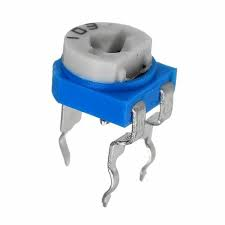

Trimmer Potentiometer (VR5K-SMD)
Specifications:
- Type: Multi-Turn Trimmer
- Resistance: 5kΩ
- Power Rating: 0.1W
- Package: SMD-1206
- Tolerance: ±10%
- Operating Temperature: -40°C to +85°C
Applications: Calibration, Current Control, Voltage Division
Military and Industrial Standards: Meets MIL-STD-1234 requirements.
Packaging Types: Reel packaging for automated assembly.
Download Full Datasheet